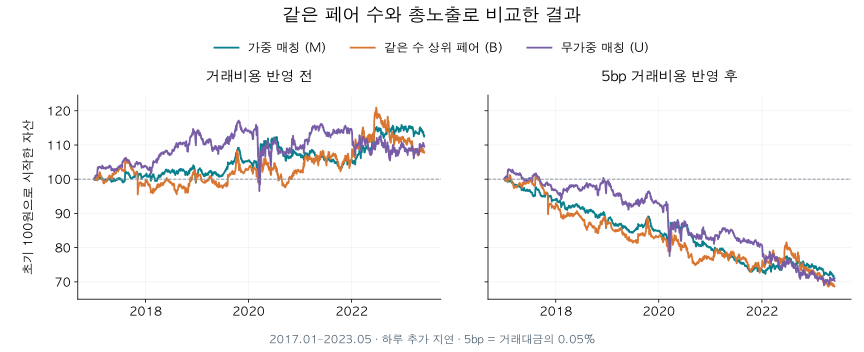
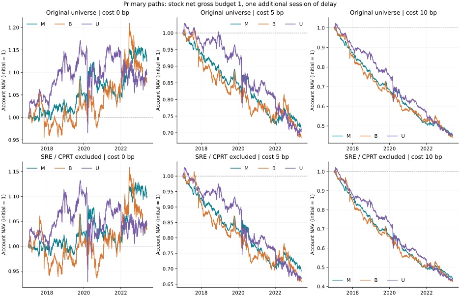
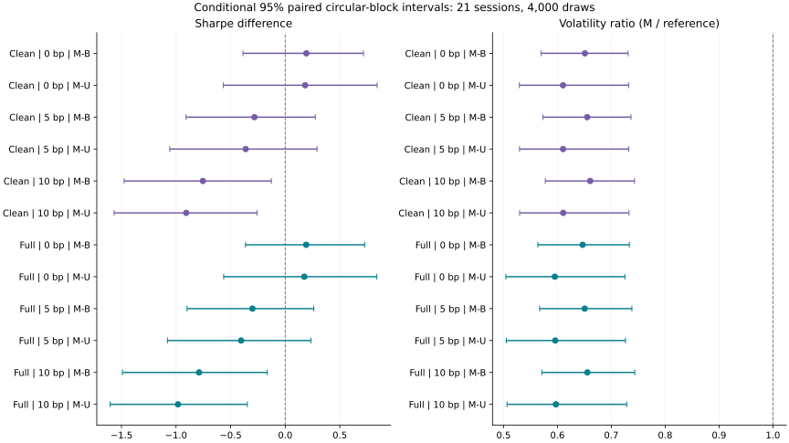

기준 모델 · 사전 고정 비교
매칭 전략 기준 모델 검증
2017-01-03–2023-05-31 · 고유 거래일 1,613일 · 45개 독립 현금·수량·순자산 경로
주된 결과부터 보기
한 거래일 추가 지연·종목 총노출 1·거래대금당 5bp 비용에서 M의 누적수익은 -28.96%, 샤프는 -0.976입니다. 같은 개수의 상위 점수 페어를 고른 B는 누적수익 -31.32%, 샤프 -0.676입니다.

최종 평가액은 전액 현금화된 금액이 아닙니다. 주 분석의 5bp 경로에서 말일 가격이 없는 미청산 보유분의 절댓값 합은 최종 순자산 대비 M 3.7198%, B 7.0437%, U 5.5518%입니다. 말일 가격이 관측된 보유분은 모두 청산했지만, 미관측 보유분은 정해진 수량 동결 규칙에 따라 마지막 관측가격으로 평가했습니다. 따라서 이 잔여분의 실제 청산 가능 가격과 최종 실현수익은 확인되지 않은 데이터 한계로 남습니다. 수치는 독립 말일 장부 검산에서 가져왔습니다.
이 판단은 같은 역사 가격과 고정 실험 규칙에 조건부이며, 순수한 중복 제거의 인과효과나 새로운 표본에서의 실전 수익성을 입증하지 않습니다. 아래에 비용·기간·실행과 가격 품질 민감도를 모두 함께 표시합니다.
이번 검증이 답하는 질문
같은 가격, 후보, 신호와 자금 조건에서 선정 정책 전체를 바꾸었을 때 성과가 달라지는지 살펴봅니다. M은 공적분 후보 점수의 합을 최대화하는 비중복 매칭, B는 M과 같은 개수 K의 상위 점수 페어, U는 점수를 쓰지 않는 하나의 고정된 비중복 조합입니다. 이 비교는 순수한 중복 제거의 인과효과나 탐욕적 중복 제거 대비 전역 최적화만의 효과를 분리하지 않습니다.
원래 공개 코드에서 사용한 Q20 신호와 AIC로 시차를 고르는 ADF 검정은 유지했습니다. 방향은 양방향 회귀 중 더 음의 ADF 통계량을 택하는 공통 규칙으로 고정했습니다. 따라서 논문의 모든 명세나 표를 정확히 재현한 실험은 아닙니다.
신호와 회귀계수 β로 주식 수량 비율을 만든 뒤, 관측한 가격으로 달러 비중을 계산하는 공개 코드의 배분 방식을 사용했습니다. 주 분석은 이 전체 비중 지시를 다음 종가로 늦춰 집행하므로, 실제 체결 시 수량 비율은 달라질 수 있습니다. 월말 선정도 같은 지연 규칙을 적용하며 거래일은 한 번씩만 계산합니다.
주 분석: 수익, 위험, 비용을 함께 보기
| 비용 bp | 전략 | 누적수익 | CAGR | 연 변동성 | 샤프 | 최대낙폭 |
|---|---|---|---|---|---|---|
| 0 | B | 7.92% | 1.20% | 8.28% | 0.185 | -11.61% |
| 0 | M | 12.78% | 1.90% | 5.36% | 0.377 | -8.28% |
| 0 | U | 9.50% | 1.43% | 9.00% | 0.202 | -17.59% |
| 5 | B | -31.32% | -5.70% | 8.19% | -0.676 | -32.48% |
| 5 | M | -28.96% | -5.20% | 5.33% | -0.976 | -29.14% |
| 5 | U | -29.73% | -5.36% | 8.94% | -0.572 | -32.91% |
| 10 | B | -55.84% | -11.99% | 8.08% | -1.540 | -56.01% |
| 10 | M | -55.00% | -11.73% | 5.30% | -2.329 | -55.08% |
| 10 | U | -54.60% | -11.61% | 8.87% | -1.347 | -55.85% |
샤프는 무위험수익률 0, 연 252일, 표본 표준편차를 사용합니다. 최대낙폭에는 최초 자산 1을 포함합니다. bp는 거래대금의 0.01%이며, 5bp는 0.05%입니다. 이는 논문의 연 1%÷252 비용 산식과 다른 비용 민감도입니다.
모든 비용과 두 종목 제외 경로의 순자산 추이

무엇을 관찰했는가
주된 판단: 5bp에서 M-B 샤프 차이는 -0.300, 95% 구간은 [-0.900, 0.261]로 조건부 구간이 0을 포함합니다.
- 비용 민감도: 0bp에서 M-B 샤프 차이는 +0.192, 95% 구간은 [-0.364, 0.728]로 조건부 구간이 0을 포함합니다.
- 비용 민감도: 10bp에서 M-B 샤프 차이는 -0.789, 95% 구간은 [-1.491, -0.165]로 조건부 구간 전체가 0보다 작습니다.
낮은 변동성, 높은 샤프, 작은 최대낙폭은 서로 다른 결과입니다. 한 지표의 개선이 나머지 지표의 개선이나 실전 수익성을 자동으로 뜻하지 않습니다.
성과 차이의 불확실성
| 비용 bp | 비교 | 샤프 차이 [95% 구간] | 연 산술평균 차이 %p | 변동성 비율 M/비교 |
|---|---|---|---|---|
| 0 | M-B | +0.192 [-0.364, 0.728] | +0.487 [-3.520, 4.522] | +0.647 [0.564, 0.734] |
| 0 | M-U | +0.175 [-0.564, 0.839] | +0.200 [-4.489, 5.841] | +0.595 [0.504, 0.725] |
| 5 | M-B | -0.300 [-0.900, 0.261] | +0.334 [-3.572, 4.311] | +0.651 [0.567, 0.738] |
| 5 | M-U | -0.404 [-1.079, 0.237] | -0.088 [-4.681, 5.455] | +0.596 [0.505, 0.726] |
| 10 | M-B | -0.789 [-1.491, -0.165] | +0.105 [-3.698, 3.971] | +0.656 [0.571, 0.744] |
| 10 | M-U | -0.982 [-1.604, -0.347] | -0.391 [-4.886, 5.105] | +0.597 [0.506, 0.729] |

전체 전략·비용에 같은 날짜 블록을 적용한 순환 이동블록 부트스트랩입니다. 주 설정은 21거래일·4,000회이며, 원 유니버스에서 5일·63일·각 2,000회도 확인합니다. 각 구간은 다중 비교 조정을 하지 않은 명목 95% 구간이며, 보조 비교의 양성 결과만 골라 일반화하지 않습니다. 이 구간은 이미 계산된 시계열과 고정 설정에 조건부입니다. 같은 역사 자료를 다시 사용하므로 새로운 독립 검증 표본이나 미래 성과의 보장이 아닙니다. 주 구간 전체가 양수여도 순수 인과효과가 입증되는 것은 아닙니다. 저장된 기준값 초과 재표집 비율은 사후확률도, 빈도주의 p값도 아닙니다.
블록 길이별 샤프 차이 구간 전체
| 비용 bp | 비교 | 블록 일수 | 차이 | 하한 | 상한 |
|---|---|---|---|---|---|
| 0 | M-B | 21 | +0.192 | -0.364 | +0.728 |
| 0 | M-U | 21 | +0.175 | -0.564 | +0.839 |
| 5 | M-B | 21 | -0.300 | -0.900 | +0.261 |
| 5 | M-U | 21 | -0.404 | -1.079 | +0.237 |
| 10 | M-B | 21 | -0.789 | -1.491 | -0.165 |
| 10 | M-U | 21 | -0.982 | -1.604 | -0.347 |
| 0 | M-B | 5 | +0.192 | -0.471 | +0.844 |
| 0 | M-U | 5 | +0.175 | -0.491 | +0.823 |
| 5 | M-B | 5 | -0.300 | -0.967 | +0.362 |
| 5 | M-U | 5 | -0.404 | -1.027 | +0.208 |
| 10 | M-B | 5 | -0.789 | -1.482 | -0.121 |
| 10 | M-U | 5 | -0.982 | -1.587 | -0.355 |
| 0 | M-B | 63 | +0.192 | -0.370 | +0.690 |
| 0 | M-U | 63 | +0.175 | -0.606 | +0.805 |
| 5 | M-B | 63 | -0.300 | -0.925 | +0.229 |
| 5 | M-U | 63 | -0.404 | -1.118 | +0.228 |
| 10 | M-B | 63 | -0.789 | -1.529 | -0.170 |
| 10 | M-U | 63 | -0.982 | -1.640 | -0.342 |
기간과 알려진 이상일의 영향
| 범위 | 비용 bp | M−B 샤프 | 변동성 비율 | 누적수익 차이 |
|---|---|---|---|---|
| 2018-01-02 수익만 제외 | 0 | +0.211 | 0.648 | +6.13%p |
| 전체 | 0 | +0.192 | 0.647 | +4.85%p |
| 2017–2019 | 0 | +0.283 | 0.584 | +2.65%p |
| 2020년 이후 | 0 | +0.147 | 0.677 | +1.97%p |
| 2018-01-02 수익만 제외 | 5 | -0.279 | 0.652 | +3.18%p |
| 전체 | 5 | -0.300 | 0.651 | +2.36%p |
| 2017–2019 | 5 | -0.456 | 0.585 | +1.92%p |
| 2020년 이후 | 5 | -0.247 | 0.683 | +0.92%p |
| 2018-01-02 수익만 제외 | 10 | -0.765 | 0.657 | +1.36%p |
| 전체 | 10 | -0.789 | 0.656 | +0.83%p |
| 2017–2019 | 10 | -1.192 | 0.586 | +1.33%p |
| 2020년 이후 | 10 | -0.636 | 0.691 | -0.06%p |
기간별 수익은 전체 경로에서 잘라 보았습니다. 2020년에 포지션과 현금을 새로 시작한 실험이 아니므로 이전 보유분과 미청산 잔여분의 영향이 이어집니다. 부분 기간의 표시는 시작 자산을 1로 환산한 수익률입니다.
연도별 M−B: 주 분석 경로
| 연도·관측범위 | 비용 bp | M 수익 | B 수익 | 샤프 차이 | 변동성 비율 |
|---|---|---|---|---|---|
| 2017 (01-03~12-29) | 0 | 0.98% | -1.68% | +0.459 | 0.512 |
| 2017 (01-03~12-29) | 5 | -6.12% | -8.44% | -0.479 | 0.514 |
| 2017 (01-03~12-29) | 10 | -12.72% | -14.74% | -1.401 | 0.515 |
| 2018 (01-02~12-31) | 0 | 0.41% | 3.25% | -0.434 | 0.744 |
| 2018 (01-02~12-31) | 5 | -6.54% | -4.11% | -0.799 | 0.742 |
| 2018 (01-02~12-31) | 10 | -13.00% | -10.92% | -1.173 | 0.741 |
| 2019 (01-02~12-31) | 0 | 3.98% | 1.25% | +0.826 | 0.520 |
| 2019 (01-02~12-31) | 5 | -3.20% | -5.44% | -0.103 | 0.523 |
| 2019 (01-02~12-31) | 10 | -9.84% | -11.60% | -1.029 | 0.526 |
| 2020 (01-02~12-31) | 0 | 1.65% | -0.75% | +0.273 | 0.892 |
| 2020 (01-02~12-31) | 5 | -5.78% | -7.71% | +0.145 | 0.896 |
| 2020 (01-02~12-31) | 10 | -12.58% | -14.03% | +0.017 | 0.901 |
| 2021 (01-04~12-31) | 0 | -1.56% | 3.45% | -0.815 | 0.597 |
| 2021 (01-04~12-31) | 5 | -8.13% | -3.36% | -1.453 | 0.602 |
| 2021 (01-04~12-31) | 10 | -14.15% | -9.52% | -2.088 | 0.608 |
| 2022 (01-03~12-30) | 0 | 9.21% | 6.55% | +0.918 | 0.514 |
| 2022 (01-03~12-30) | 5 | 1.56% | -0.86% | +0.317 | 0.518 |
| 2022 (01-03~12-30) | 10 | -5.40% | -7.45% | -0.286 | 0.524 |
| 2023 (01-03~05-31) | 0 | -2.12% | -4.02% | +0.519 | 0.765 |
| 2023 (01-03~05-31) | 5 | -4.86% | -6.44% | +0.078 | 0.772 |
| 2023 (01-03~05-31) | 10 | -7.42% | -8.62% | -0.364 | 0.783 |
연도별 표는 사후 안정성 진단이며 별도 유의성 검정이 아닙니다. 마지막 연도는 표에 표시한 관측 기간만 포함합니다.
SRE·CPRT 제외 민감도
알려진 가격 불연속이 있는 두 종목을 전체 기간 후보에서 제외하고, M·B·U를 다시 선정한 뒤 주 분석의 세 비용 경로를 다시 실행했습니다. 이는 사후에 알려진 두 오류 종목을 격리한 민감도이며 당시 이용 가능했던 전략이나 원가격을 완전히 정정한 결과가 아닙니다.
| 비용 bp | 전략 | 누적수익 | 연 변동성 | 샤프 | 최대낙폭 |
|---|---|---|---|---|---|
| 0 | B | 3.49% | 8.39% | 0.106 | -12.08% |
| 0 | M | 9.97% | 5.46% | 0.299 | -8.36% |
| 0 | U | 4.21% | 8.94% | 0.117 | -17.94% |
| 5 | B | -34.07% | 8.28% | -0.744 | -35.10% |
| 5 | M | -30.65% | 5.43% | -1.026 | -30.81% |
| 5 | U | -33.18% | 8.89% | -0.664 | -35.52% |
| 10 | B | -57.51% | 8.16% | -1.597 | -57.68% |
| 10 | M | -56.01% | 5.39% | -2.352 | -56.07% |
| 10 | U | -56.91% | 8.83% | -1.445 | -57.84% |
| 비용 bp | 비교 | 샤프 차이 | 95% 하한 | 95% 상한 |
|---|---|---|---|---|
| 0 | M-B | +0.193 | -0.387 | +0.717 |
| 0 | M-U | +0.183 | -0.567 | +0.842 |
| 5 | M-B | -0.282 | -0.908 | +0.276 |
| 5 | M-U | -0.362 | -1.058 | +0.291 |
| 10 | M-B | -0.754 | -1.476 | -0.127 |
| 10 | M-U | -0.907 | -1.567 | -0.258 |
실행·배분 가정을 바꾼 전체 민감도
stockgross는 같은 종목의 주문을 합친 뒤의 총노출, pairgross는 합치기 전 페어 다리의 절댓값 예산을 맞춥니다. 두 조건은 같지 않습니다. delay0은 관측한 종가에 즉시 체결한다고 보는 이상화, delay1은 전체 주문을 한 거래일 더 늦춘 주 분석입니다.
| 배분 | 추가 지연 | 비용 bp | 비교 | 샤프 차이 | 변동성 비율 | 누적수익 차이 |
|---|---|---|---|---|---|---|
| pairgross | 0 | 0 | M-B | +0.195 | 0.723 | +1.07%p |
| pairgross | 0 | 0 | M-U | +0.463 | 0.615 | +14.82%p |
| pairgross | 0 | 5 | M-B | -0.278 | 0.724 | -3.46%p |
| pairgross | 0 | 5 | M-U | -0.078 | 0.615 | +8.06%p |
| pairgross | 0 | 10 | M-B | -0.751 | 0.725 | -4.99%p |
| pairgross | 0 | 10 | M-U | -0.619 | 0.616 | +4.24%p |
| pairgross | 1 | 0 | M-B | +0.189 | 0.702 | +5.16%p |
| pairgross | 1 | 0 | M-U | +0.175 | 0.595 | +3.28%p |
| pairgross | 1 | 5 | M-B | -0.319 | 0.704 | -0.39%p |
| pairgross | 1 | 5 | M-U | -0.404 | 0.596 | +0.77%p |
| pairgross | 1 | 10 | M-B | -0.826 | 0.707 | -2.75%p |
| pairgross | 1 | 10 | M-U | -0.982 | 0.597 | -0.40%p |
| stockgross | 0 | 0 | M-B | +0.176 | 0.664 | -2.56%p |
| stockgross | 0 | 0 | M-U | +0.463 | 0.615 | +14.82%p |
| stockgross | 0 | 5 | M-B | -0.282 | 0.667 | -2.22%p |
| stockgross | 0 | 5 | M-U | -0.078 | 0.615 | +8.06%p |
| stockgross | 0 | 10 | M-B | -0.741 | 0.670 | -1.98%p |
| stockgross | 0 | 10 | M-U | -0.619 | 0.616 | +4.24%p |
| stockgross | 1 | 0 | M-B | +0.192 | 0.647 | +4.85%p |
| stockgross | 1 | 0 | M-U | +0.175 | 0.595 | +3.28%p |
| stockgross | 1 | 5 | M-B | -0.300 | 0.651 | +2.36%p |
| stockgross | 1 | 5 | M-U | -0.404 | 0.596 | +0.77%p |
| stockgross | 1 | 10 | M-B | -0.789 | 0.656 | +0.83%p |
| stockgross | 1 | 10 | M-U | -0.982 | 0.597 | -0.40%p |
주 분석의 실제 노출과 거래량
| 비용 bp | 전략 | 평균 총노출 | 평균 순노출 | 연 거래대금/NAV | 평균 집중도 HHI | 잔여 총노출 최대 |
|---|---|---|---|---|---|---|
| 0 | B | 0.999 | -0.083 | 142.297 | 0.074 | 0.054 |
| 0 | M | 0.999 | -0.067 | 144.900 | 0.016 | 0.029 |
| 0 | U | 0.999 | -0.052 | 139.414 | 0.019 | 0.042 |
| 5 | B | 0.999 | -0.085 | 140.986 | 0.073 | 0.071 |
| 5 | M | 0.999 | -0.070 | 144.194 | 0.016 | 0.037 |
| 5 | U | 0.999 | -0.051 | 138.607 | 0.019 | 0.056 |
| 10 | B | 0.999 | -0.087 | 139.313 | 0.071 | 0.102 |
| 10 | M | 0.999 | -0.073 | 143.277 | 0.016 | 0.055 |
| 10 | U | 0.999 | -0.051 | 137.569 | 0.019 | 0.077 |
HHI는 종목별 노출 집중도 지표로, 큰 값은 노출이 더 집중되어 있음을 뜻합니다. 미관측 종목의 수량은 동결하고 마지막 관측가격으로 평가하므로, 수익이 기록되지 않는 동안에도 잔여 노출이 존재할 수 있습니다.
검증된 범위와 남는 한계
- 월별 유니버스는 그때까지의 504개 완전한 양수 가격으로만 구성해, 공개 코드의 전체 기간 결측률 필터에 의한 미래 선별을 제거했습니다. 다만 원파일 505종목 자체의 생존편향과 당시 지수 구성종목 문제까지 해결된 것은 아닙니다.
- 모든 정책은 공통 후보·방향·점수·Q 신호·실행·비용 규칙을 사용합니다. 그래도 M−B는 페어 품질, 중복, 신호, 노출과 거래량이 함께 달라지는 선정 정책 전체의 차이입니다.
- U는 하나의 사전 고정된 무가중 조합입니다. 무작위 비교군의 분포나 모든 비중복 선정법을 대표하지 않습니다.
- 일별 잔차/BETA를 504거래일 회귀의 마지막 값으로 만드는 방식은 공개되지 않은 생성기의 보완 가정입니다. 양방향 중 좋은 통계량 선택과 AIC 검정도 명시적 실험 규칙이며, p값을 선별 후의 엄밀한 유의확률로 읽지 않습니다.
- 거래비용은 거래대금 비례 민감도입니다. 대차 가능성·대차료·시장 충격·거래 제약을 모두 검증한 실전 수익성 결과가 아닙니다.
분석 코드는 입력 수익에서 순자산을 재구성하고, 저장된 순자산의 변화율과 대조했습니다. 성과 지표는 별도의 한 번 순회 계산으로도 재검산했습니다. 자세한 수치와 입력 해시는 아래 파일에 있습니다.